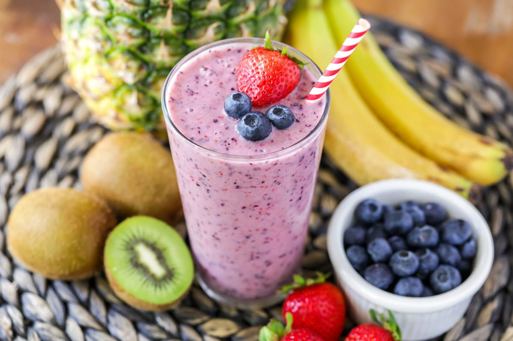

High-Protein Fruit Shake

This fruit shake provides a refreshing blend of mixed berries, banana, and nut butter, all packed with essential vitamins and minerals.
The addition of high-protein powder ensures a protein-rich shake to support muscle recovery and satiety.
Customize the recipe by using your preferred fruits and adjusting the sweetness and thickness according to your taste.
List of ingredients
- 1 cup unsweetened almond milk or any milk of your choice
- 1 scoop of your preferred high-protein powder (such as whey protein, pea protein, or soy protein)
- 1/2 cup frozen mixed berries (strawberries, blueberries, raspberries)
- 1/2 ripe banana
- 1 tablespoon almond butter or peanut butter
- 1 tablespoon chia seeds or flaxseeds (optional, for added fiber and omega-3 fatty acids)
- Ice cubes (optional, for a thicker shake)
- Water (optional, for desired consistency)
- Optional toppings: sliced fresh fruits, a sprinkle of granola or nuts, a drizzle of honey
Step by step instruction
- In a blender, add the almond milk (or milk of your choice).
- Add the protein powder to the blender. Choose a flavor that complements the fruits or use a neutral-flavored powder.
- Add the frozen mixed berries, ripe banana, almond butter or peanut butter, and chia seeds or flaxseeds.
- If you prefer a thicker shake, you can add a handful of ice cubes at this stage.
- Blend all the ingredients together until smooth and creamy. If the shake is too thick, you can add a splash of water to reach your desired consistency.
- Taste the shake and adjust sweetness by adding a small amount of honey if desired.
- Pour the fruit shake into a glass or bottle.
- If desired, top with sliced fresh fruits, a sprinkle of granola or nuts, and a drizzle of honey for added texture and presentation.
- Serve immediately or store in fridge and enjoy!